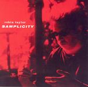

| Artist: | Robin Taylor |
| Title: | Samplicity |
| Label: | Marvel Of Beauty Records MOBCD 006 |
| Length(s): | 50 minutes |
| Year(s) of release: | 2001 |
| Month of review: | [04/2004] |
| 1) | Black Country | 5.55 |
| 2) | Lavender Mist | 5.01 |
| 3) | BTI | 6.42 |
| 4) | Fractalism | 6.33 |
| 5) | February Pain | 4.04 |
| 6) | Burnt Forest Island Incuding A Visit By Mr Gillion | 12.37 |
| 7) | Ambient Isles | 9.17 |
This is a solo record, although a few people help Taylor out with some of the instruments. In case you are interested, he is from Denmark, not a very fertile ground for prog.
Lavender Mist is totally different. Here the lone sax rings out, and the synths underneath give the impression of a brewing atmosphere, or maybe a swarm of bees of some kind. The sax sound is clear and fluent as the music slowly builds up to include some synth material. The sounds used are rather distinctive, and although the gait stays lazy, the thrust is clear.
BTI is even more peaceful, subtle and careful. Taylor crafts this type of mood well, very delicate. The music is now more in the vein of world and electronic music, and one might put also the previous track at least partly in that category.
Fractalism brings us back to progressive, the kind found on the Cuneiform label. The marimba takes the melodic lead, the music continues to exude a kind of peacefulness, or maybe more like it is holding its breath. Later, the guitar enters the picture, with a very sharp sound and almost randomly meandering. Still, this is not jazzrock, for that the mood is too relaxed. There is something of the Fripp soundscapes (the album happens to have been recorded in Soundscape Studio in Copenhagen; could be a coincidence) in here, though.
Before we move on to the final two longer tracks, February Pain is the shortest one. This track is in the vein of Lavender Mist, a subdued backdrop of synths building a brooding atmosphere. Slowly the volume increases, and then piano and bass take over, the mood stays a quiet one, but there is a dark undercurrent.
Burnt Forest Island incuding A Visit By Mr Gillion is the longest track on the album, and it opens quite melodically. Piano and keyboards are the main instruments and the melody is a wonderful one. Very introverted. Halfway, a noisy guitar sets in and I guess we are switching over to the second part here. There is a feeling of expectation here. However, the occasional sax stays occasional, while for the final few minutes we do move into something more organized. Here the sax and a beat set in for some laid back jazz.
Ambient Isles is the closer and you get what the title makes you expect: soft breathing atmosphere, cool and refreshing, but also light. Again, there is a certain thoughtfulness about it all.